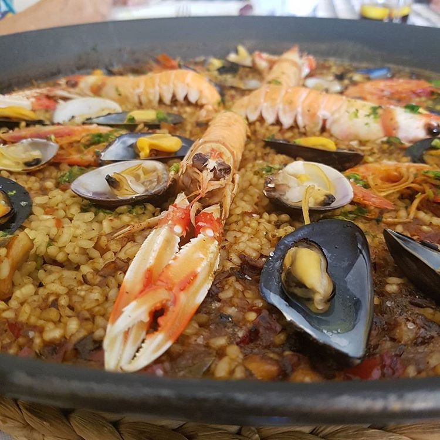

🍤Receta para cocinar una rica paella de mariscos🍤
La Pella es un plato español a base de arroz que se cocina junto con especias, mariscos, legumbres y carne de pollo
Los ingrentes para realizar este plato son:
🔸1 pimiento rojo, cortado en tiras
🔸2 dientes de ajo picados
🔸6 cucharadas de aceite de oliva
🔸2 cucharadas de perejil picado
🔸150 g de anillas de calamar
🔸1,5 lt de caldo de marisco
Elaboración 👨🍳:
Se pone la paella al fuego con el aceite y, cuando esté muy caliente, se añade el pollo y el conejo que se ha troceado previamente. Se sofríe la carne hasta que quede ligeramente dorada. Se pela, se despepita y se tritura el tomate y luego se fríe, a fuego lento, junto con los trozos de pimiento durante 7 u 8 minutos. Cuando el sofrito esté casi terminado se añaden una pizca de sal, las carnes y el pimentón y se sofríe todo de nuevo sin que se queme. Agregamos agua hasta cubrir el sofrito y dejamos cocer. El tiempo depende de la consistencia de las carnes. Si el ave o el conejo son de corral, se calcula 30 ó 35 minutos. Diez minutos antes de que termine el tiempo que hemos calculado para la cocción de las carnes, se añaden las judías y el garrofó; de esta manera quedan en su punto. También podemos echar los caracoles, purgados anteriormente. Al finalizar el tiempo de cocción se añade más agua caliente y se deja continuar la ebullición otros 3 ó 4 minutos más. Se agregan las hebras de azafrán y la ramita de romero, se rectifica de sal y se mantiene la ebullición 5 minutos más. Después se añade el arroz de forma igualada y se deja que cueza otros 5 ó 6 minutos a fuego alto, que se irá bajando paulatinamente. Una vez finalizada la cocción se deja que repose durante unos minutos para que el arroz termine de absorber el caldo.
